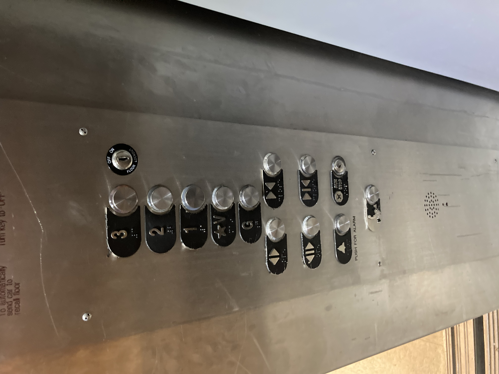
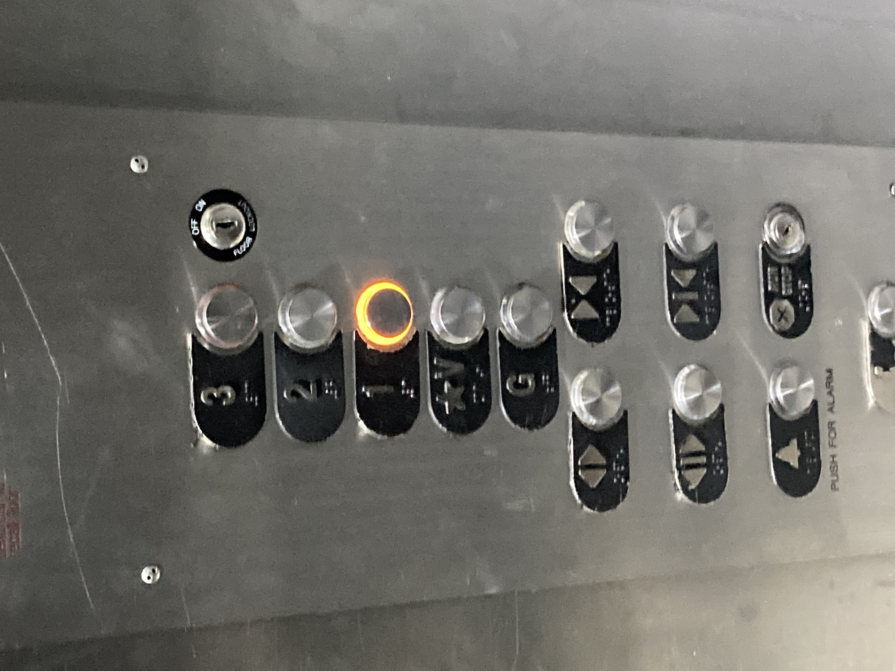
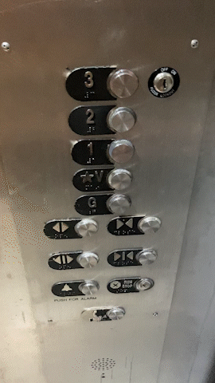
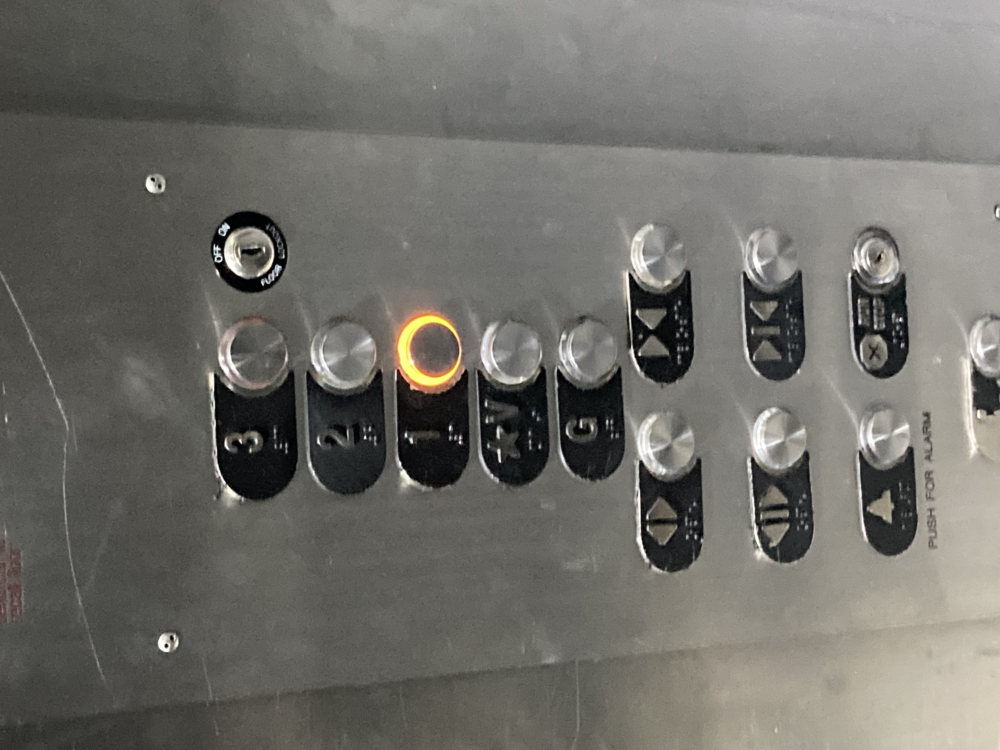
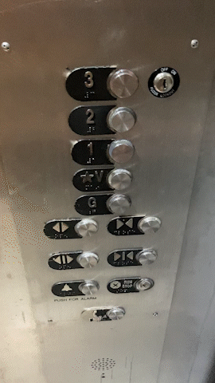
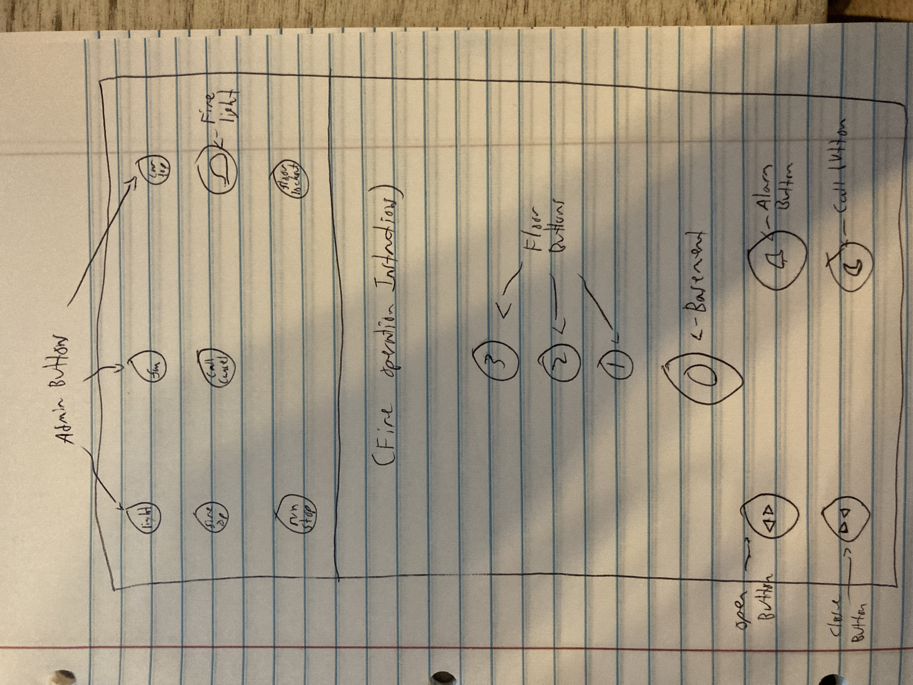

Elevator Analysis-Matthew Morse

 



Interface Pros:
- Buttons in straight, logical column
- Braile
- Explicit labels for some unclear buttons
- Bright orange highlighting for button feedback
Interface Cons:
- Purpose of 'V' button is unclear
- Unclear why 'V' button has star
- 'G' label is odd since the actual ground floor is at 1 and it's 'G' instead of '0'
- Looks like there are two pairs of open/close buttons
Common Use Cases:
- Select floor, close door
- Open door
- Activate alarm
- Perform maintenance/emergency services
How Interface Helps:
- Orange feedback light to confirm elevator is working
- Similar buttons are grouped together
- Most important buttons are central and clearly labeled
- Rarer use cases require an administrative key or the buttons are out of the way
Most Common Mistakes:
- Mix up G and 1 buttons
- Misuse V button
Improvements:
- Remove redundant open/close buttons
- Remove/clarify 'V' button
- Relabel 'G' as '0'
- Keep all admin buttons at top and clerly marked
